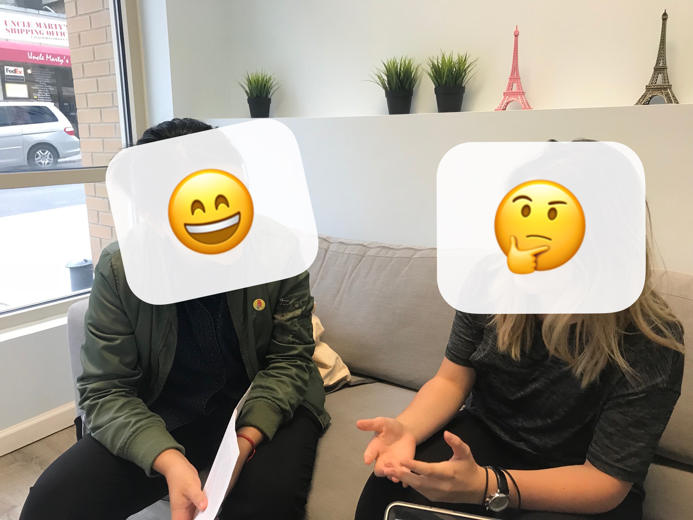
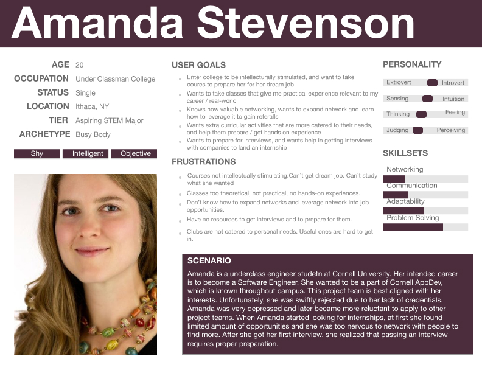
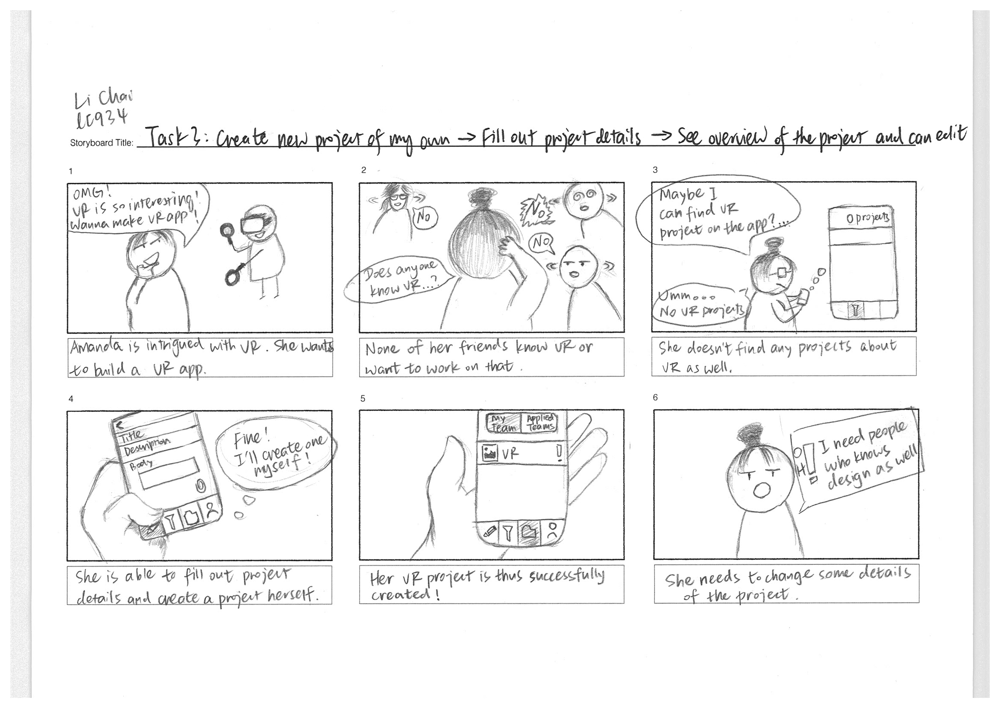
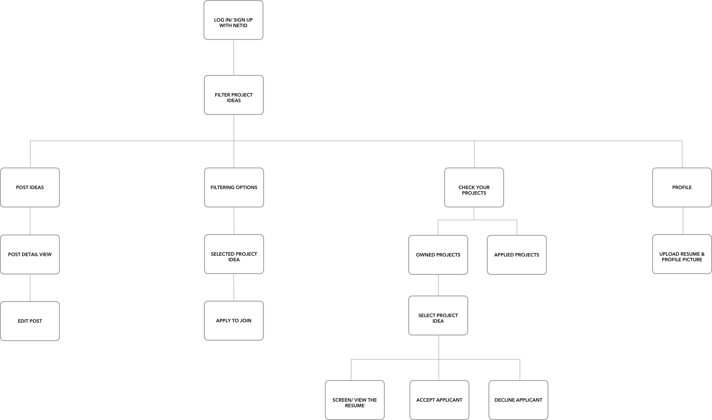
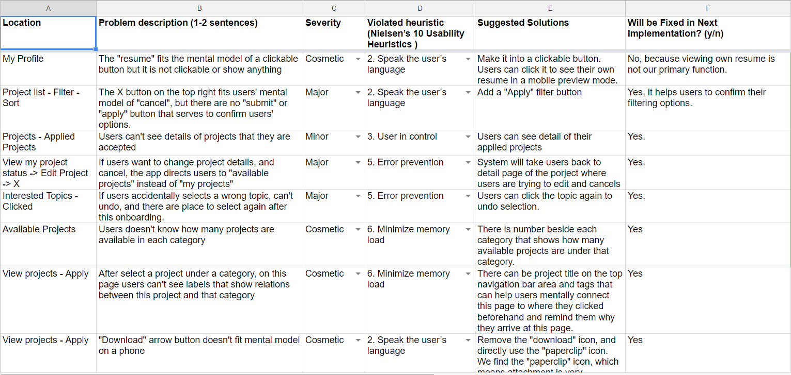
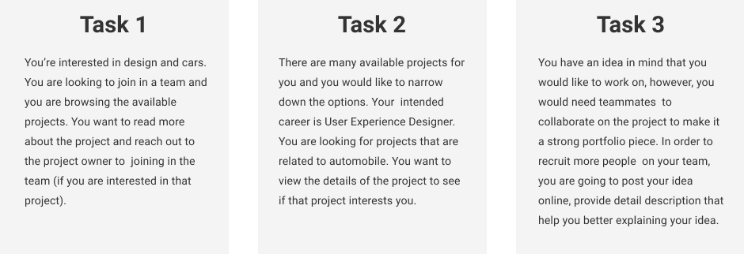

USER RESEARCH, UX/UI DESIGN, VISUAL DESIGN
TeamUp!
- Teammates: Fanwen Ji, Daniel Ra, Weiyi Hou
- Project Type: Class Project, for Human-Centered Interaction
- Timeline: August - November 2018
- Role: UX Researcher, UX/UI Designer, Usability Evaluation
- Tools: Good-old Pencil&Paper, Balsamiq, Sketch, Invision
- UX Methods: Contextual Interview, Affinity Diagramming, Persona, Competitive Analysis, Storyboarding, Information Architecture, Wireframing, Prototyping, Heuristic Evaluation, User Testing
OVERVIEW
Problem
College education doesn't always offer students hands-on skills and practice. This leads to disadvantage for students applying for jobs. Students often find a huge gap between what they learn in classes and what work environment requires when they are applying for internships and jobs to enter the society.
Thus, how might we better prepare college students to land their jobs after graduation?
Solution
While there are many factors causing students not able to find jobs, we decided to narrow down the problem scope to focus on helping them gain practical skills that can make them ready for the real world. Therefore, we designed TeamUp!, a mobile app that allows students to gain practical experience by working on projects together. Here's our final high-fidelity interactive prototype.
DISCOVER: PRELIMINARY USER RESEARCH
Contextual Interview
Interview Goal: Learn how prepared students are for their intended career and try to understand how students are in the lead or not.
We conducted interviews with a random sample of five (Nielson's number) underclassmen from Cornell University, two juniors and three sophomores. We chose sophomores and juniors to interview with because they would benefit most from our visioned product: first-years just start taking courses, and seniors already looking for jobs.
Our interview protocol covered topics regarding extra-curricular activities, classes' relevance to intended career, awareness of career resources, readiness for interview, professional network, and etc.

Analyze Data: Affinity Diagramming
We categorized the qualitative data from all the interviews and clustered into six key areas (extracurricular, expectation vs. reality, classes, passing interviews, networking) where students mentioned frequently and could fall short.
Persona
According to the valuable insights we learnt from the clusters in Affinity Diagramming, we created a persona as a reference that best represent the users we were designing for. Identifying students' goals and their frustrations helped us shape the product.

IDEATION
Competitive Analysis
Before crazy brainstorming, we examined existed solutions in the market to find where our biggest chance lay. Within each category that we identified in Affinity Diagramming, we researched related products/services that could solve the issue more or less.
Competitive Analysis Document
Brainstorming: lots of ideas!!
Based on the persona's frustrations, each team member individually brainstormed 20 different ideas. Then we gathered together, combine similar ones, and select one final idea to pursue. The idea to "form project teams" won because we decided it had the highest feasibility and impact comparing to others. It had more advantages among the competitors analyzed from above.
PROTOTYPE
Tasks, Storyboarding, and Information Architecture
Keeping in mind what users trying to achieve using this app and the scenarios where users use the app (storyboard), we limited tasks that users can do to:
- Browsing project ideas (with filtering and sorting functionality)
- Apply for others' projects
- Posting new ideas
- Screen applicants to users' own projects

We arranged these tasks in a natural and intuitive flow and organized them into the information architecture below.

First-round Iteration: Wireframing, Paper Prototype
We then hand sketched some potential screens that afford users with adequate information. Paper prototypes allow us to quickly communicate our ideas and iterate.
User Feedback
We randomly invited four students to test our paper prototypes. We asked them to complete tasks above with app and observed whether anything wasn't intuitive. For example, we didn't realize the icons used could be confusing. It took some time for first-time users to understand what some icons mean within the app's context. We found it much easier if buttons were written in texts, instead of icons.
Second-round: Mid-fidelity Prototype with Balsamiq
After compiling the user feedback, we built the screens on Balsamiq and connected the screens according to the user flow we designed. The black and white interfaces and the built-in icon library allowed us to evaluate the functions and flows fully without bothering with visual details yet.
Heuristic Evaluation
Each group member evaluated the prototype with Nielsen's heuristics. During meeting, we compiled all the problems and decided whether one problem needs to be solved based on how severe it is and how hard the solution is.

High-fidelity Prototype with Sketch and Invision
Finally, we created high-fidelity prototype with Sketch and made it interactive with Invision. The biggest change since last step was we discarded the function that users could screen applicants to their projects. We realized it wasn't necessary for users to accomplish their goals. Even without it, users could still contact each other.Instead, we only allowed users to write an email to the project owners to express interests. The receivers' email address is kept anonymous. The project owners then can reply if they want.Aside from this change, we adopted Cornell's color palette to provide a sense of exclusivity and school pride within the academic institution.
Usability Testing and Final Improvements
For the last user testing, the goal was to see whether our app would allow users to complete the given tasks and achieve their goals. We assessed both usability and user experience metrics, including learnability, effectiveness, efficiency, error rate, and satisfaction. 
From the evaluation results, we chose to make changes that could have the biggest impact/severity ratio.
Final Invision Prototype
TAKEAWAYS
This project had been lots of workload and a very rewarding experience to me as well. I went through three design iterations, each dug out many valuable insights from user testing. You can never know the users "too well". I learn to respect the UX methods and use them properly.